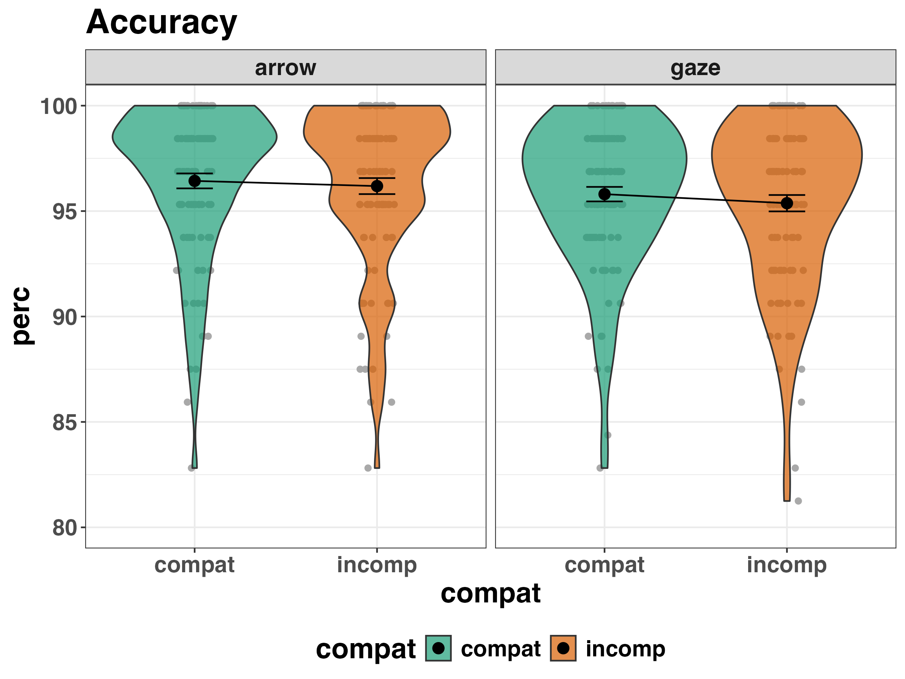
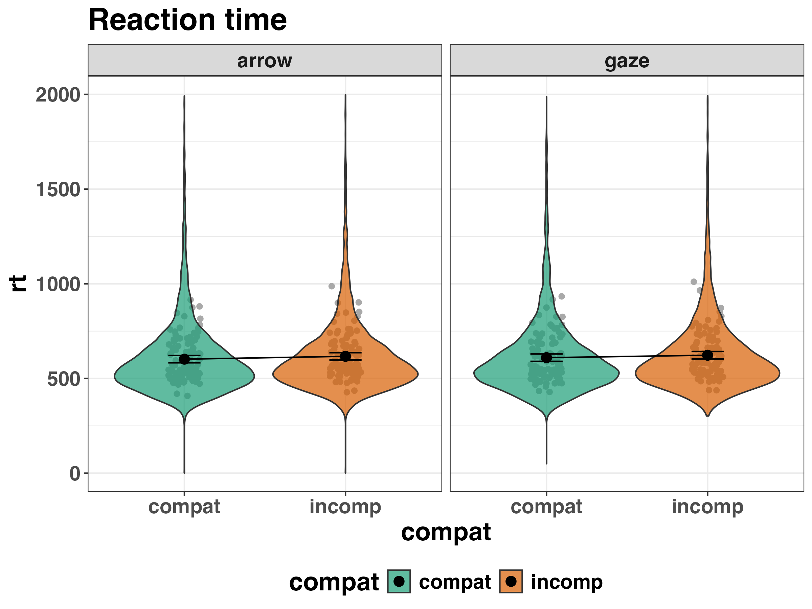
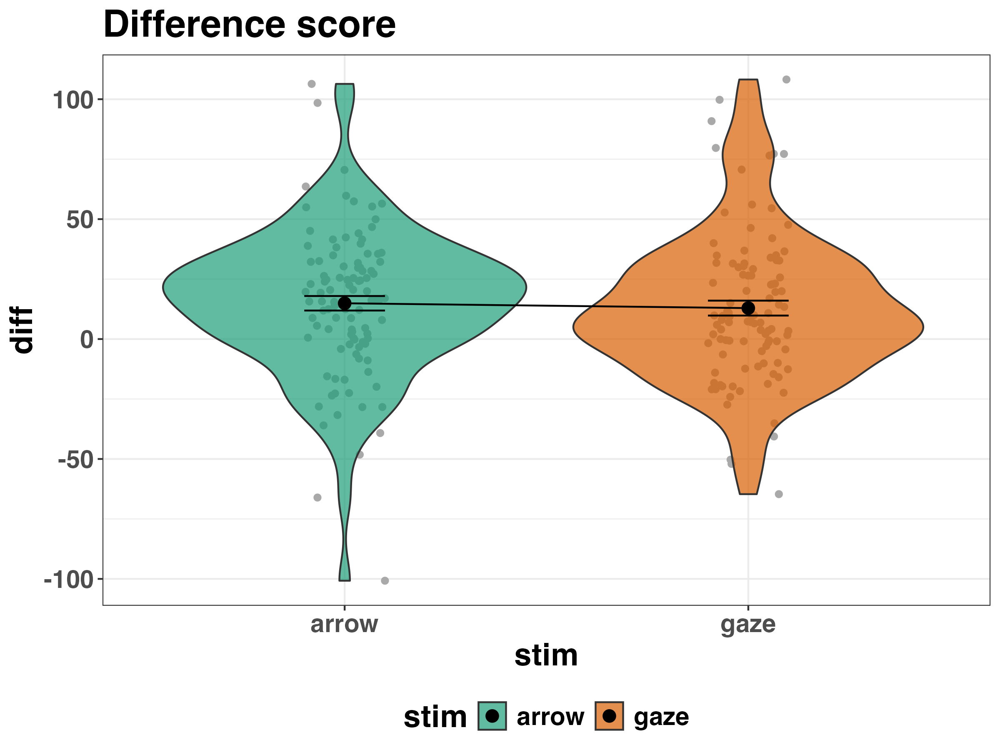
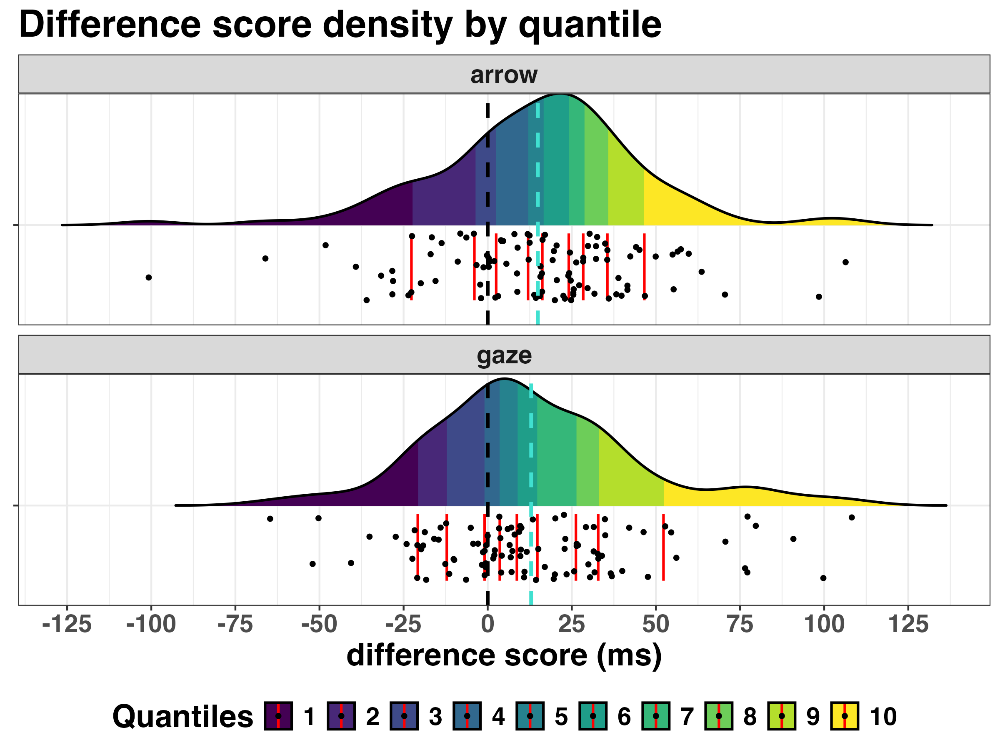
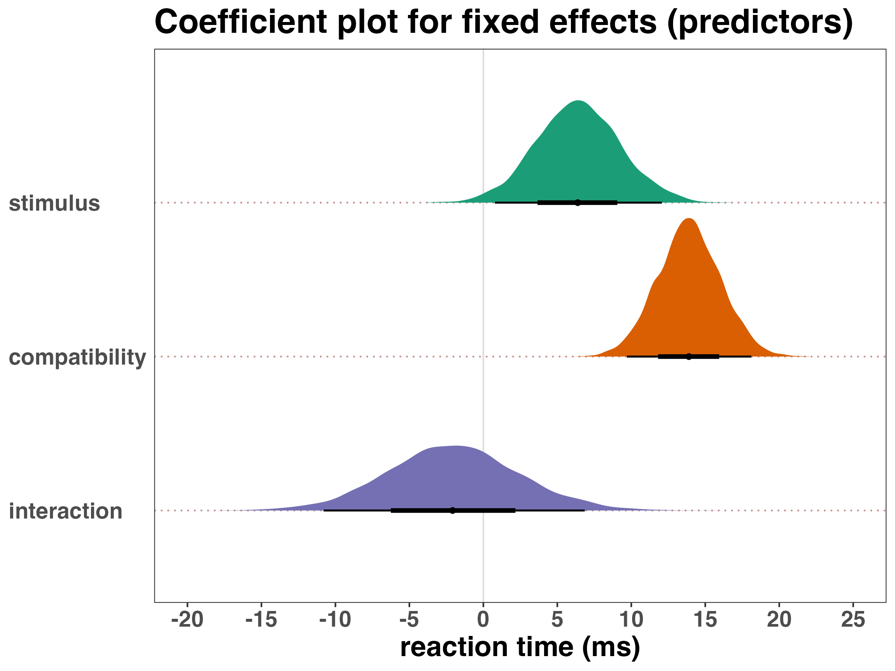
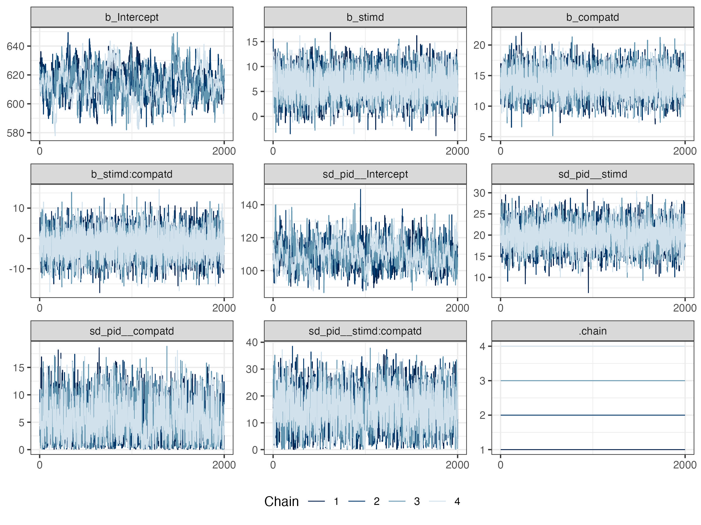

![]()

A tutorial on setting up a reproducible workflow in R and R Studio with Quarto
Abstract
This is where the abstract would go.
Keywords
these are the key words
1 Introduction
2 Methods
We report how we determined our sample size, all data exclusions (if any), all manipulations, and all measures in the study (Simmons et al., 2012).
2.1 Participants
2.2 Material
2.3 Procedure
2.4 Data analysis
We used R version (R Core Team, 2025) for all our analyses.
3 Results
3.1 Descriptive statistics
Raw data plots.
Accuracy by condition violin plot (Figure 1).
Reaction time by condition violin plot (Figure 2).

Reaction time by difference scores violin plot (Figure 3).

Reaction time by difference scores density plot with quantiles (Figure 4).

3.2 Inferential statistics
Now we plot and tabulate parameters from the posterior distribution.
Fixed effects from model b2 (Figure 5).

Here are a couple of example tables displaying fixed effects (Table 1, Table 2).
tinytable::tt()
| term | value | .lower | .upper |
|---|---|---|---|
| Note. This is a footnote. | |||
| intercept | 613.9 | 593.62 | 635 |
| stimulus | 6.4 | 0.77 | 12 |
knitr::kable()
| term | value | .lower | .upper |
|---|---|---|---|
| intercept | 613.94 | 593.62 | 634.79 |
| stimulus | 6.38 | 0.77 | 12.07 |
4 Discussion
5 Disclosures
5.1 Data and code availability
blah.
5.3 Competing interests
Blah.
6 References
R Core Team. (2025). R: A language and environment for statistical computing. R Foundation for Statistical Computing. https://www.R-project.org/
Simmons, J. P., Nelson, L. D., & Simonsohn, U. (2012). A 21 Word Solution (SSRN Scholarly Paper 2160588). Social Science Research Network. https://doi.org/10.2139/ssrn.2160588
7 Appendix A: Supplementary Materials
7.1 Model formulas
The regression formula for the full model (model b2): \(rt \sim 1 + stimulus * compatibility + \ (1 + stimulus * compatibility | pid)\)
Note: rt = reaction time (ms); stimulus = blah; compatibility = blah; pid = subject/participant identifier.
7.2 A supplementary table
Here, I just reproduce the table from the main manuscript to save time making anything else. But of course in a real paper, you wouldn’t do this, you’d just show whatever you needed. It is labelled differently to reflect that it is a supplementary table (Table 3).
tinytable::tt()
| term | value | .lower | .upper |
|---|---|---|---|
| Note. This is a footnote. | |||
| intercept | 613.9 | 593.62 | 635 |
| stimulus | 6.4 | 0.77 | 12 |
7.3 A supplementary figure
Let’s take a look at the mixing of chains in the model. This is a useful model diagnostic check to see that the model built ok (Figure 6).
